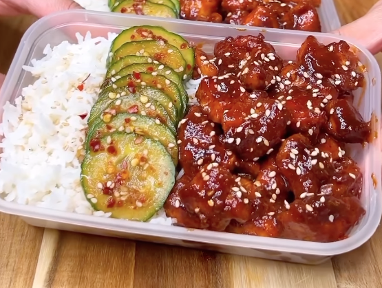

Odin Style Korean Chicken and Rice

Description
One of the most flavorful meal box recipes considered "chicken and rice".
452 Calories/ 40g Protein / 51g Carbs/ 10g Fat
Ingredients
For the chicken:
- 700g Cubed Chicken Breast
- 2 tsp Garlic Powder
- 1.5 tsp Black Pepper
- 2 tsp Paprika
- 1 tsp Salt
- 30g Corn Flour
For the glaze:
- 50ml Light Soy sauce mixed wit h50ml water (100ml total)
- 25g Honey
- 40g Gochujang Paste
For the pickled cucumbers:
- Thinly sliced cucumber (x1)
- 20g Light Soy Sauce
- 10ml Rice Vinegar
- Chili Flakes (OPTIONAL)
- 1 tsp Garlic Powder
- 1 tsp Sesame Seeds
Steps
Chicken
- Cut chicken breast into cubes
- Mix in the dry ingredients (for the chicken) with the cubed chicken
- Cook the coated chicken on the pan for 8 minutes. Make sure that the chicken pieces look golden brown
- Set the chicken aside and lower the heat to "Low"
- In the same pan, mix the Light Soy Sauce, Water, Honey, and Gochujang paste and continue to stir until the mixture thickens and starts to bubble
- Let the glaze reduce for 3-4 minutes
- Toss the chicken back into the pan and coat evenly in the glaze
Cucumbers
- Chop the cucumber into thin slices
- Mix the sliced cucumbers with Light Soy Sauce, Rice Vinegar, Chili flakes, Garlic Powder, and Sesame Seeds
Notes
- Steam your favorite kind of rice and pack it in your tupperwares with the chicken
- Pack the cucumbers separately because you don't want to microwave the cucumbers when you eat your meal
- For a little bit more of presenation, you can sprinkle a little bit of sesame seeds over top of the chicken after packing it with the rice